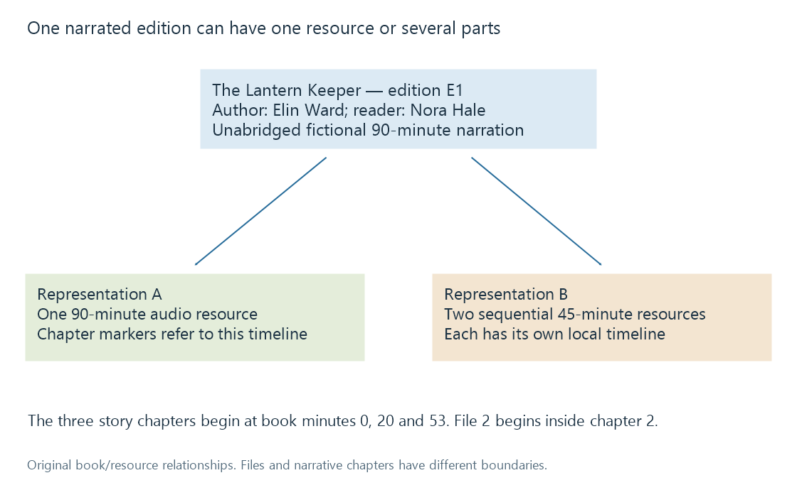

Audiobook organization
Audiobook organization relates a narrated edition to its ordered audio resources, descriptive credits and navigation without equating chapters with files.
An audiobook is a narrated edition of a text, represented by one or more ordered audio resources. The author, narrator, edition and resource sequence all matter to how the library describes and plays it.
The fictional novella The Lantern Keeper can be stored in one 90-minute audio file or in two 45-minute files. Those two storage arrangements do not, by themselves, define two different books.

Files and chapters have different boundaries
| Arrangement | Resource organisation | Chapter navigation |
|---|---|---|
| One file for the whole narration | One resource timeline | Needs embedded or otherwise associated chapter points |
| One file per narrative chapter | File boundaries coincide with chapter boundaries | File selection can help locate chapters |
| Several storage-sized parts | Parts divide the recording for convenience | Narrative chapters can cross a part boundary |
The third case is common enough to make “one file equals one chapter” an unreliable assumption. Calling a 45-minute part Chapter 2 can misdescribe it if it contains the end of one narrative chapter and the start of another.
The .m4b extension commonly labels an MP4-based audiobook resource. It does not, by itself, prove that the file contains a correct chapter map. An MP3 can also carry chapter information through suitable metadata.
Edition-level fields hold the sequence together
A book title supplies the human-readable name. Edition context supplies language, narrator, abridgement and publication information. File/track positions supply the playback sequence. They have separate jobs.
An illustrative directory communicates storage clearly:
Elin Ward/
The Lantern Keeper — Nora Hale, unabridged/
Part 01.mp3
Part 02.mp3
This is an original descriptive layout, not a promise that every phrase becomes a dedicated imported field. Emby's audiobook naming documentation describes organisation and embedded chapter/track numbering; its Book Naming guide supplies the content-type context.
Embedded titles and positions remain important when filenames are shortened, copied or changed. In a multi-disc source, the disc coordinate can qualify a restarted track counter. Alphabetical file sorting alone can put Part 10 before Part 2.
Keep contributor roles visible
Elin Ward wrote the book. Nora Hale reads this edition. A translated edition can add a translator. Those roles should not collapse into an unexplained Artist label.
Some metadata conventions inherit fields originally designed for music. A reader interpreting them needs to know whether an artist-like field carries the author, narrator or album-level grouping credit. Narrator credits explains why that choice matters.
An edition label also helps distinguish two recordings of the same text. A work title can remain unchanged while the narration language, performed duration or abridgement changes.
Continuing a multipart narration
A resume value of 16:00 in Part 02 corresponds to book minute 61 in the original two-part example: the first part contributes 45 minutes. The file-local position remains 16:00.
Replacing the narration with another reader's edition changes the timing correspondence. A percentage through one performance does not automatically locate the same passage in another. A chapter identifier and a known textual location can provide better context than an unqualified elapsed-time value.
Chapter structure develops the resource-local and whole-book coordinates using the same three-chapter example.
See Also
- Audiobook editions and narrated versions
- Audiobook narrators and reader credits
- Audiobook chapter structure
- Resume positions and playback timelines